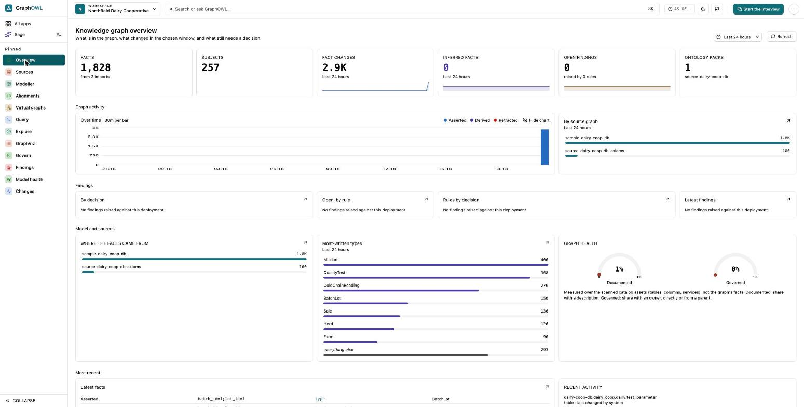

Engine
A triple store with time travel, constraint validation, reasoning and graph query. Every fact keeps its history: nothing is deleted, only retracted.
GraphOWL stores, queries, reasons over and validates enterprise metadata as one connected graph. History, rules and validation are part of the engine, not added on top of it.
Request demo access See the console

Three layers, one product. The engine is the foundation; the catalog and the context layer sit on top of it.
A triple store with time travel, constraint validation, reasoning and graph query. Every fact keeps its history: nothing is deleted, only retracted.
The enterprise metadata model — entities, hierarchy and governance — expressed in the graph itself, so definitions, ownership and lineage are queried like any other fact.
Ways for people and agents to use the graph: an MCP server, semantic search and APIs.
A synthetic cooperative, so there is no real data in it. Its source database holds farms, milk lots, quality tests, production batches and retail sales.
The source database is read through a read-only role, so nothing in the console can change it.
The live demo is password-protected while GraphOWL is in early access. Email connect@graphowl.app and you will be sent a login for demo.graphowl.app.